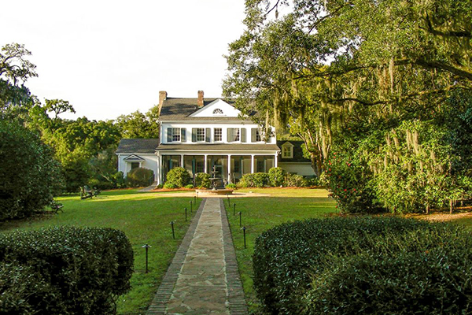
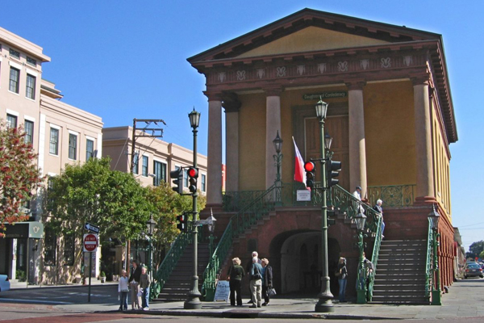
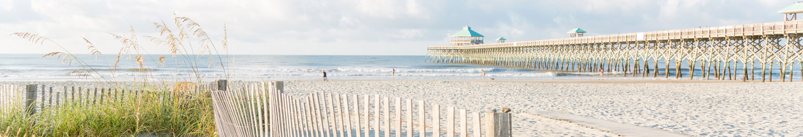

WEDDING AND RECEPTION at THE LEGARE WARING HOUSE
1500 Old Towne Rd, Charleston, SC 29407The Legare Waring House began as a modest overseer's dwelling, constructed in the mid-19th century, when the property was part of Old Town, a sea-island cotton plantation. In the late 1940s, Ferdi and her second husband, Dr. Joseph I. Waring, enlarged and remodeled the old overseer's house in the Colonial Revival style. This stately, circa 1840s house has hosted governors, international dignitaries and blushing brides alike.
HISTORIC CHARLESTON CITY MARKET
188 Meeting St, Charleston, SC 29401The City Market is a historic market complex in downtown Charleston, South Carolina. Established in the 1790s, the market stretches for four city blocks from the architecturally-significant Market Hall, which faces Meeting Street, through a continuous series of one-story market sheds, the last of which terminates at East Bay Street.
FOLLY BEACH
Folly Beach, SC 29439The closest beach to downtown Charleston, Folly is a mecca for surfers, fishermen and all lovers of the laid-back beach lifestyle. You’ll find excellent pier and surf fishing, an enticing variety of restaurants and bars, live music, and some of the best surfing on the east coast.
THINGS TO DO IN CHARLESTON
Folly Beach, Sullivan's Island Beach, Isle of Palms Beach, Kiawah Island Beach, Seabrook Island Beach, and Edisto Beach.
Charleston offers up some of the best cuisine in the country. A combination of European, African and Native American cuisines, Southern food combines complex flavors and classic techniques.
A cold brew. A comforting chai. A classic Americano. No matter your cup of joe, you’ll be savoring every last drop in Charleston.
Charleston provides one of the most visited and connected airports in the country. Offering direct flights from Cincinnati, Boston, and Hartford.
The Gullah community has had a tremendous influence on Music in Charleston, especially when it comes to the early development of jazz music.
Preserved plantations and gardens are minutes from downtown. The moss-covered oak trees are blooming azaleas take over the area!